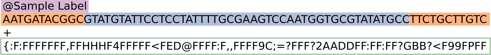
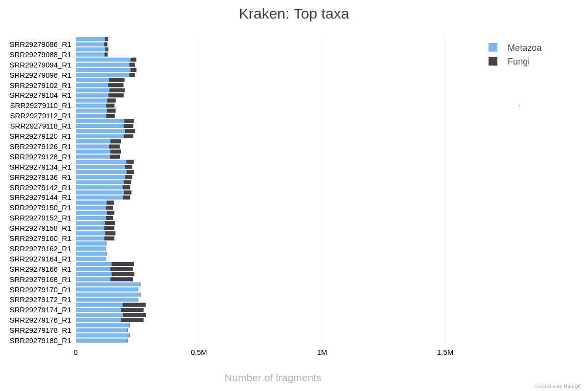

3 Pré-processamento
Esta seção do curso foca na preparação dos dados brutos. Como discutimos, em experimentos de interação patógeno-hospedeiro (como Candida em macrófagos), a maior parte das sequências obtidas pertencerá ao hospedeiro. O pré-processamento é a etapa onde garantimos que estamos analisando apenas o que nos interessa: o transcriptoma do patógeno.
4 Pré-processamento e Descontaminação
Nesta etapa teórica, vamos entender como saímos das amostras biológicas para os arquivos de sequências limpas, prontos para a quantificação.
4.1 1. O Ciclo do Sequenciamento: Das Células às “Reads”
O processo começa com a extração do RNA total da amostra (macrófagos infectados). Esse RNA é convertido em cDNA e fragmentado para a construção de uma biblioteca de sequenciamento.

As máquinas de sequenciamento (como as da Illumina) leem esses fragmentos e geram arquivos no formato FASTQ. Cada arquivo FASTQ contém milhões de sequências curtas chamadas reads, acompanhadas de índices de qualidade (Phred Score) para cada base identificada. No entanto, esses arquivos brutos contêm:
- Adaptadores de sequenciamento.
- Bases de baixa qualidade nas extremidades.
- Contaminação do Hospedeiro: Em modelos de infecção, até 95-99% das reads podem ser do hospedeiro (Mus musculus), mascarando o sinal da Candida albicans.
4.2 2. O Pipeline nf-core/detaxizer
Para resolver o problema da contaminação, utilizamos o pipeline nf-core/detaxizer. Ele é projetado especificamente para verificar a presença de táxons específicos e filtrá-los de arquivos FASTQ.
O fluxo de trabalho do detaxizer segue estas etapas principais:
- Controle de Qualidade (FastQC): Avaliação inicial da qualidade das reads brutas.
- Pré-processamento Opcional (fastp): Corte de adaptadores e filtragem de reads por tamanho ou qualidade.
- Classificação Taxonômica (Kraken2 e/ou bbduk): As reads são comparadas contra bancos de dados genômicos para identificar sua origem. O Kraken2 usa k-mers para uma atribuição rápida, enquanto o bbduk pode ser usado para pareamento direto contra sequências de referência.
- Validação Opcional (BLASTN): Para maior rigor, as reads classificadas podem ser validadas via alinhamento BLAST contra bancos de dados de nucleotídeos.
- Filtragem: O pipeline remove as reads associadas ao táxon indesejado (neste caso, Mammalia).
- Relatório (MultiQC): Consolida todos os resultados em um único arquivo HTML, permitindo visualizar quantas reads foram removidas e a qualidade final dos dados.
4.3 3. Automação com Nextflow
A execução de todas essas ferramentas manualmente seria propensa a erros e difícil de reproduzir. Para isso, utilizamos o Nextflow, um motor de fluxo de trabalho que gerencia a instalação de ferramentas (via Docker/Singularity) e a execução paralela das tarefas.
Para utilizar o Nextflow, é necessário ter o Java instalado e o comando curl -s https://get.nextflow.io | bash. O Nextflow organiza cada ferramenta em “processos” que são conectados em uma “pipeline”.
4.3.1 O Script de Execução
Para o nosso conjunto de dados de Candida e macrófagos, o comando utilizado para a descontaminação foi:
nextflow run nf-core/detaxizer \
-profile docker \
--input samplesheet.csv \
--preprocessing \
--kraken2db db/k2_pluspf_20260226.tar.gz \
--classification_kraken2_post_filtering \
--filter_trimmed \
--save_intermediates \
--classification_bbduk \
--classification_kraken2 \
--tax2filter 'Mammalia' \
--outdir results/decontaminated/4.3.2 Entendendo os Parâmetros:
-profile docker: Garante que todas as ferramentas (Kraken2, FastQC, etc.) rodem dentro de containers, sem necessidade de instalação manual.--tax2filter 'Mammalia': O ponto crucial. Instruímos o pipeline a identificar e remover tudo o que for classificado como mamífero (o hospedeiro Mus musculus e qualquer outra leitura humana).--kraken2db: Aponta para o banco de dados taxonômico usado para a identificação.--filter_trimmed: Aplica a filtragem nas reads já processadas pelofastp.
Sobre o Banco de Dados Kraken2 (PlusPF)
O banco de dados utilizado, k2_pluspf, é a versão Standard plus Refseq protozoa & fungi. Ele contém o genoma humano, genomas de bactérias, archaea, vírus e, crucialmente para este curso, o RefSeq de protozoários e fungos.
Isso é fundamental porque, para filtrar o que é Mammalia com segurança, o software precisa saber diferenciar o que é hospedeiro do que é patógeno. Sem as sequências de fungos no banco, o Kraken2 poderia classificar erroneamente reads da Candida como sendo de origem desconhecida ou até atribuí-las falsamente a outros grupos. Para mais informações sobre as referências do Kraken2, consulte https://benlangmead.github.io/aws-indexes/k2
Ao final deste processo, obtemos arquivos FASTQ “limpos”, contendo predominantemente sequências da Candida albicans, prontos para a próxima etapa: a Quantificação.
Uma estratégia igualmente válida seria remover as leituras de Fungi e analisar a partir das leituras removidas ao invés das filtradas. Talvez um de vocês possa tentar isso depois!
4.4 Visualizando a Composição Taxonômica (Kraken2)
Para avaliar a eficiência da nossa estratégia de descontaminação e entender a composição das nossas amostras brutas, analisamos a distribuição taxonômica das reads antes da filtragem. O gráfico abaixo, gerado pelo MultiQC, resume os principais táxons identificados pelo Kraken2.

Como interpretar este gráfico:
Predomínio de Metazoa (Azul): Como esperado em um modelo de infecção de macrófagos, a grande maioria dos fragmentos é classificada como Metazoa (neste caso, representando o hospedeiro, Mus musculus). Isso ilustra o desafio da “contaminação do hospedeiro”: o sinal do camundongo é ordens de grandeza maior que o do patógeno.
O Nosso Alvo - Fungi (Cinza Escuro): Os segmentos em cinza escuro representam o reino Fungi, especificamente a Candida albicans. Observe que a proporção de reads fúngicas varia entre as amostras.
Por que isso é importante?
Ao utilizarmos o pipeline nf-core/detaxizer com o parâmetro –tax2filter ‘Mammalia’, estamos essencialmente “removendo” a parte azul dessas barras e mantendo apenas a parte cinza escuro. Isso garante que, na etapa de Quantificação, o software não perca tempo processando sequências do hospedeiro que não nos interessam para este estudo específico do patógeno.
Com os dados descontaminados, como podemos saber exatamente quantos genes da Candida estão presentes em cada amostra? Veremos isso na próxima seção sobre o nf-core/rnaseq.